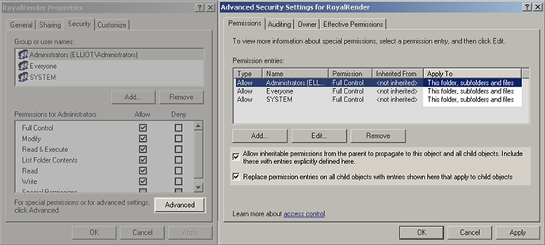

It is recommended to install a service for Clients and especially for the Server.
The service executable itself is installed on the local harddrive of the machine.
The service will get the latest rrClient/rrServer from the RR network share every time it starts.
The service is automatically started during boot of the machine (Without a service you have to manually start the client)
The service logs in with an user. This user is named for rrService User in this help.
With a service installation, you should have 3 processes running:
The service can be installed with the rrWorkstationInstaller.
You have to decide how your client will run on workstations of artists.
See help section rrApplications/ rrClient/ Run on artists workstation
rrConfig, tab "Paths and drives"
If you install the rrServer or rrClient as service, then you do not have any mapped drives.
No matter what you have in your windows environment, the service has its own environment.
If you use these drive letters in your scene files, then you have to tell RR these mapping.
rrConfig, tab "Paths and drives"
If you want to use RR on multiple OS, then you have to create a conversion table for the paths.
You should setup the Company Project name in rrConfig, tab "Jobs".
A Company Project is not the same as an XSI or Maya project/database. It is the Project your Company is working on.
For Example:
You are working on a Commercial for a new shoe named "The Faster" of the manufacturer "Nico".
So your Company Project name would probably be something like "2015_Nico_TheFaster".
Any you have created a folder for each company project \\fileserver\share\projects\2010_Nico_TheFaster\... for your data.
So you have to tell RR that your Company Project is the name of the 4th folder.
RRender has a feature named "average clients".
For example if you are running multiple Company Projects at the same time, then the server tries that each Company Projects has the same amount of render power.
Or that all jobs with the same priority get the same amount of clients. Or each user gets the same amount.
When a client asks for a new job, the server sends a job of the Company Projects with the least render power.
Note:
As the server can only influence the averaging if a client asks for a new job, it could take some time.
Depending on how long the client takes to finish a job segment.
You can enable the option "Abort clients for better averaging" in rrConfig, tab jobs.
Then the server checks the client distribution every x hours and aborts Company Projects that have too many clients.
If you are in a larger company, you should set file access rights.
The table shows typical file access rights, some are required (like executable rights), some are optional (like no write access for default artists).
Inherit permissions:
You should always start from the root directory, set the permissions there, enable inheritable permissions and replace permissions for all child objects.
Windows:
To change permissions: right-click on an folder, "Properties", "Security" Tab, then you should use the "Advanced" button.

The access rights used in this table are
R |
Read access (this includes the eXecute right on linux for folders, otherwise you cannot read the dir listing) |
W |
Write/Create/Change Access |
X |
Execute files |
There are four kinds of users
rrService |
The user that was set in the workstation installer for the rrService. All Clients and the Server runs with this user account. |
Tech |
Technical Staff Members. They are allowed to change all RR settings. |
Artists |
Artists submit and check jobs. They do *NOT* change *global* RR settings. |
Admin |
You need one user that is allowed to write/change all data, including the executables. This user is required for updates. It is not shown in the table as it needs full access. |
Folder |
rrService + Tech |
Artists |
|
[RR] |
R |
R |
Root folder, everyone needs to be able to read it. |
[RR]\*.bat [RR]\*.sh |
R X |
R X |
Startup scripts, everyone need to execute them |
[RR]\autoload |
RW |
RW |
Used by Artists for automated .xml file submission |
[RR]\bin |
R X |
R X |
RR executable files, write protected because of possible virus attacks. |
[RR]\plugins [RR]\plugins64 |
R X |
R X |
RR plugin files, write protected because of possible virus attacks. |
[RR]\sub\cfg_global |
RW |
R |
Global RR settings. Artists usally do not need to change RR settings. (But you can allow them by giving write access to some files in there) |
[RR]\sub\cfg_user |
RW |
RW |
Artists are allowed usally to write files in there. This folder is for
|
[RR]\website |
RW |
RW |
Website and job data folder. Used for html files, render log files, image caches, ... |
The Local Data Folder is created on every machine that runs the client.
As it contains rendered images and scene files, you can restrict the access rights.
Only the client requires to read that folder and sub-folders.
Folder |
rrService |
Tech |
Artists |
../rrLocalData |
RW |